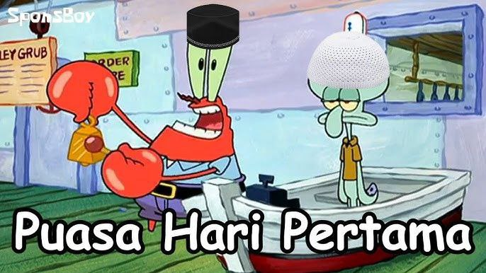

Day wan Puasa
Haloo, gimana puasa hari pertamanya? Lancar? Atau ada sesuatu yg mengganggu?
Kalo aku sih yaa lumayan lah, mungkin karena terbiasa puasa jadi biasa aja heheh.
Tapi ada serunya karena kalo puasa Ramadhan buka puasa sama-sama kalo biasanya kan sendiri.
Puasa itu kita paling excited pas menjelang magrib aja, seru aja nungguin yg pasti 😅.
Semoga kita lancar dan bisa terhindar dari godaan-godaan duniawi wkwk.
Terimakasih, sampai bertemu di puasa dan two.